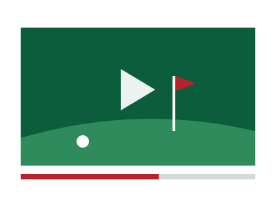

The best golf YouTubers to watch right now
Golf YouTube has become its own sport. These are the golf YouTube channels that keep fans coming back, whether you like pro-level skill, group matches, or pure chaos.

Bryson DeChambeau
About 2.9M subscribers
Watch for Break 50The biggest creator channel in golf belongs to a working pro. Bryson’s Break 50 series has him and a guest playing a scramble from the forward tees, trying to shoot under 50. Guests have ranged from Donald Trump and Phil Mickelson to Steph Curry and Carlos Alcaraz. He has said MrBeast inspired him to start the channel, and it shows in how big the ideas get.
Good Good
About 2.14M subscribers
Watch for group matchesLaunched in 2020, Good Good grew from a group of friends filming matches into a full media and apparel company. Their videos mix team matches, challenges, and plenty of trash talk. The brand is going through a rough stretch after its August 2026 ad controversy, but the channel has kept posting.
Grant Horvat Golf
About 1.8M subscribers
Watch for challengesGrant is one of the fastest growing names in golf YouTube. His channel is built on creative challenges, like taking on tour pros such as Jason Day with a head start, or getting ten golfers together to try to break 40. He was also part of the group that finally broke 50 with Bryson.
Bob Does Sports
About 1.51M subscribers
Watch for eventsBob Does Sports leans into big personality and bigger events. Their Internet Invitational, run with Barstool, is one of the most chaotic multi-part competitions on golf YouTube and a great starting point for new viewers.
Bryan Bros Golf
Creator channel
Watch for pure skillIf you care most about seeing great golf, the Bryan Bros are hard to beat. Their 2026 season-long series works like a FedEx Cup for creators and builds to a winner-take-all $100,000 finale.
Rick Shiels Golf
About 3.09M subscribers
Watch for course vlogsRick runs the biggest golf channel on YouTube overall. It is technically an instruction channel, but plenty of fans watch purely for his course vlogs, matches, and easygoing personality.
Phil Mickelson and the HyFlyers
About 477K subscribers
Watch for a legend on cameraA six-time major winner running his own YouTube channel is a sign of how much golf media has changed. It is a newer channel, so it is a good one to follow early.
Subscriber counts as of September 22, 2026, from GolfScout.
How to pick a golf YouTube channel
Start with the format you enjoy. If you like watching great shots, go with Bryson or the Bryan Bros. If you want friends competing and joking around, try Good Good or Bob Does Sports. If you like a creative twist on every video, Grant Horvat is the pick. Most golf fans end up following a few, since many of these creators show up in each other’s videos.